Basinga se décline en quatre formes étroitement liées entre elles - chacune faisant avancer les trois autres : un duo, des traversées spectaculaires, des stages (ou traits d’unions) et une grande forme funambule, pierre angulaire du collectif.
|
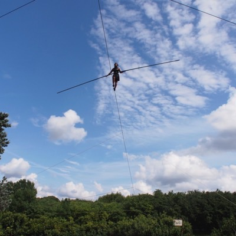
6 septembre 2013 Sauve Festival Mad in Sauve |
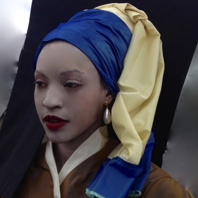
le 27 Juin 2014 La Haye Réouverture du Mauritshuis |
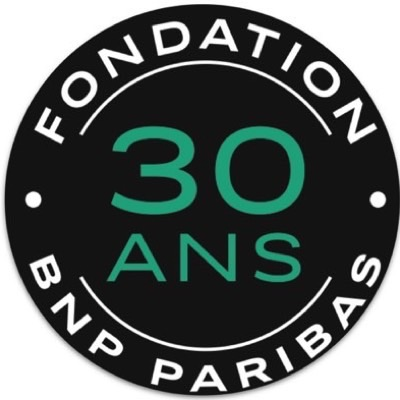
le 13 Octobre 2014 Marché Saint-Honoré Les 30 ans de la fondation BNP Paribas |
|
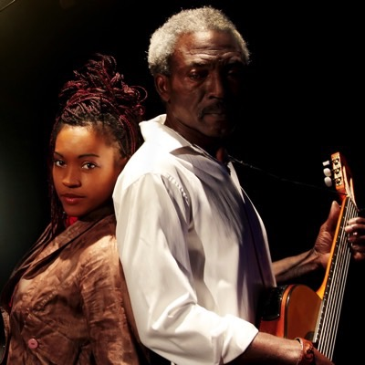
Duo Basinga |
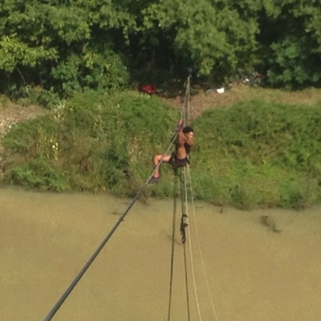
"Tangente" (titre provisoire) Actuellement en création et toujours en recherche de résidence et coproduction. |
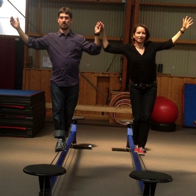
Funambule en Famille |
Pour un festival, un événement, la mise en valeur d’une place ou d’un bâtiment, en collaboration avec d’autres artistes ou dans son plus simple appareil, Basinga vous propose d’inventer avec vous des traversées funambules uniques.
Et puisqu’une illustration vaut mieux qu’un long discours : trois exemples de traversées déjà menées.
|
6 septembre 2013 Sauve Festival Mad in Sauve |
le 13 Octobre 2014 Marché Saint-Honoré Les 30 ans de la fondation BNP Paribas |
|
le 27 Juin 2014 La Haye Réouverture du Mauritshuis |
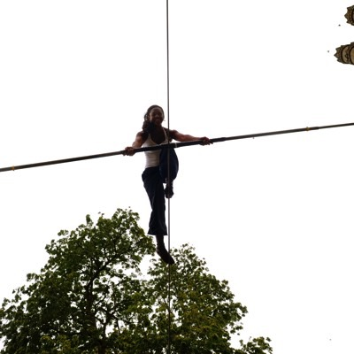
Et Vous? Créez votre propre Traversée !!! |
C’est au retour de sa première visite à Kinshasa, son pays d’origine, que Tatiana-Mosio BONGONGA propose à son père de créer avec lui un numéro pour le Festival Mondial du Cirque de Demain.
Pour elle comme pour son père, ce concours est un prétexte. Le moyen d’interroger leur relation. Mais aussi leurs origines et le croisement de leurs histoires personnelles.
Le Jury leur a attribué la médaille d’or, en Janvier 2012 ainsi que le prix du costume et le prix Bretagne Circus.
Basinga est un mot en Lingala qui veut dire cordes, liens.
Liens entre un père et sa fille, liens entre deux artistes qui, sans que ce soit conscient, ont tous les deux choisi de s’exprimer en faisant vibrer des cordes. Elle est danseuse de cordes, funambule. Lui est guitariste et chanteur.
Ensemble ils forment ce duo émouvant de haut-vol. Le duo Basinga.
Ce duo - créé sous forme de numéro en 2012 – sera repris et augmenté en 2015 pour devenir un spectacle tout-terrain d’une trentaine de minutes, explorant plus encore ces liens qui nous unissent.
TATIANA HIGH WIRE ACT
Prévue pour une création à l’été 2016, Tangente (titre provisoire) sera une grande forme funambule et participative jouant en plein air ou dans des lieux fermés de grand volume. La funambule s’élève en musique sur des lignes qui apparaissent et disparaissent mystérieusement. Les spectateurs s’unissent pour faciliter et accompagner l’ascension de celle qui, au fur et à mesure de son avancée, devient une figure de plus en plus fragile, de plus en plus apaisée, de plus en plus en plus épurée. Des chants s'élèvent d'on ne sait où. Des costumes muent. Plus la performance devient spectaculaire, plus l’exploit d’une seule personne s’estompe au profit d’une émotion collective, plus la frontière entre artistes et public se trouble.
Avancer, franchir des obstacles, ce n’est pas enfouir ses peurs ou ses faiblesses. C’est au contraire les accepter, les prendre contre soi et progresser avec. Nos prétendus équilibres ne sont que la somme de nos déséquilibres. Seuls, aveuglés par le mythe de la toute-puissance individuelle, nous ne valons rien. La funambule n’a aucun pouvoir sans ceux et celles qui l’accompagnent. Sécurisent son ascension. Montent ses lignes. La mettent en musique. L'habillent. La regardent. L'enchantent.
Ce n’est plus une figure surhumaine qui marche sur un fil, mais une association triangulaire qui avance et grandit. Campée au sol et dans les airs.
Chaque représentation fera suite à plusieurs jours d’implantation préalable durant lesquelles des bénévoles de tous âges seront formés à la pratique et à l’accompagnement du funambule, ainsi qu’à des actions musicales et chorale qui porteront certaines phases du spectacle.
Pour cette création et la réalisation de la plupart de ses effets scénographiques, Basinga a entamé un travail de recherche technique, certainement amené à révolutionner la pratique du funambule.
Basinga propose des stages, rencontres et ateliers amenant à s’interroger sur l'art du funambule et à s'immerger dans les sensations, les émotions et les questionnements spécifiques à cette discipline : apprivoisement du risque, recherche d'équilibre, connaissance de soi, concentration et endurance.
Les ateliers débouchent sur la possibilité pour les participants de prendre part à une Traversée ou bien à la Grande Forme funambule et donc de contribuer à ce qui rend ces performances absolument uniques.
|
Funambule en Famille |
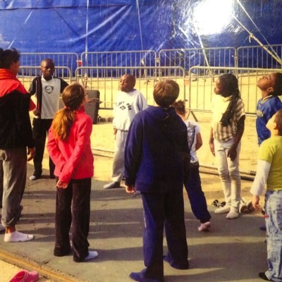
Atelier en Equilibre |
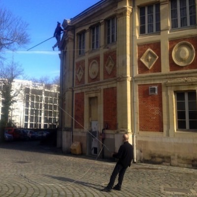
Atelier Cavallettiste |
|
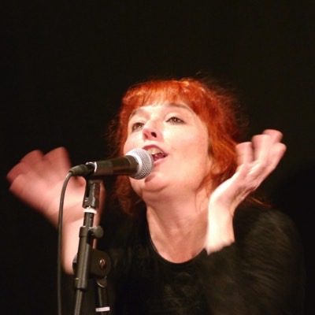
Atelier Jeux de voix |
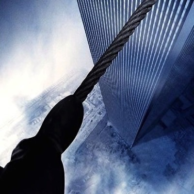
Débat/discussion autour de la prise de risque |
Les cavaletti sont des cordes placées à cheval sur le fil, qui servent à le maintenir droit en limitant l’oscillation gauche / droite. Pour sa Grande Forme comme pour ses Traversées la compagnie Basinga a besoin de 10 à 20 personnes pour tenir ces cavaletti, s’y asseoir comme sur un siège et bien donner son poids lorsque la funambule passe à son niveau. Alignés les uns aux autres tous les 10 m les cavalettistes forment une haie humaine indispensable à la progression du funambule. (De 1 à plusieurs heures en fonction du projet. Âge 18 ans minimum. Poids 60 kg minimum. Ne pas boire d’alcool le jour de la représentation)
Projection en plein air du documentaire « Le funambule » de James Marsh primé en 2009 de l’oscar du meilleur documentaire pour ce récit d’une traversée hors du commun: celle de Philippe Petit, artiste français, qui a installé en toute illégalité un fil entre les tours du World Trade Center et commis le "crime artistique du siècle".
À l’issue de cette projection la compagnie vous propose une rencontre avec Tatiana-Mosio Bongonga, funambule, ainsi que des personnalités dont l'objet de recherche, le travail ou la passion, implique de côtoyer une forme de risque différente de ce que nos sociétés ont l'habitude de côtoyer.
Qu'est ce que le risque ? Où se situe t'il au quotidien ? Dépasser ce qui effraie signifie t'il forcément prendre un risque ? Qui protège t'on à vouloir limiter la prise de ce qui est socialement considéré comme un risque ? Autant de question socialement et intimement touchantes qui permettront aux spectateurs de jeter un autre regard sur l’art du funambule.
Atelier de découverte du fil à vivre en famille. Parents/enfants, mais aussi grand- parents/petits-enfants, frère/sœur etc... Une expérience où les rapports habituels peuvent être amenés à se distendre, voire s’inverser, au gré des difficultés liées à la hauteur et aux déséquilibres.
(3 heures. Pour tout le monde sachant marcher de 7 à 77 ans et plus...)
« Quand je tiens une personne sur un fil , à peine 50 cm du sol, que je sens son coeur battre la chamade et que je vois son visage tout crispé en apnée, je me dis que : « Je ne peux pas le laisser comme ça, il faut que je l’aide à dépasser sa peur, pour qu’il se rende compte qu’elle n’a aucune raison d’être ! Ce n’est qu’une histoire d’adaptation. Chaque situation instable trouve une solution plus stable (mais certainement pas stable) !
Tatiana-Mosio BONGONGA.
Petits exercices ludiques, jeux, découvertes de différents agrès de cirque lié à l’équilibre : la boule, le fil, le roula-boula. Cet atelier à pour but de jouer avec sa dextérité dans toutes les situations. La séance démarre par un petit échauffement rapide. Il se poursuit par quelques exercices de proprioception au sol, sous forme de jeux, seul et en binôme.
Fin prêts, la découverte de différents agrès circassiens peut commencer. (1 heure. Pour enfants (- 8 ans doivent être accompagnés)).
Pascale Valenta vous propose de partager une expérience vocale, sonore et émotionnelle par le biais d’un stage de chant débouchant sur une expérience inédite permettant de combiner le plaisir de la restitution et le frisson de la performance : l'accompagnement en chant de la grande Traversée. (Durée variable en fonction du projet. A partir de 12 ans. Partenariat avec une école de musique ? Restitution en live lors de la traversée funambule).
Improvisation funambule commandée pour les 30 ans de la Fondation BNP Paribas le 13 octobre au Marché Saint Honoré (Paris IIème) en collaboration avec la compagnie MAD de Sylvain Groud et l'Académie Fratellini.
Date : le 13 Octobre 2014
Lieu : Marché Saint-Honoré
Évènement : Les 30 ans de la fondation BNP Paribas
Compagnie MAD- Sylvain Groud / Tatiana-Mosio Bongonga
Participation de Tatiana-Mosio, le 27 juin 2014 à un vaste spectacle événementiel pour la réouverture d’un nouveau musée à La Haye et le retour en ses murs d’un Trésor National Hollandais : le tableau la Jeune Fille à la Perle de Johannes Vermeer.
Date : le 27 Juin 2014
Lieu : La Haye
Évènement : Réouverture du Mauritshuis
Mauritshuis Opening
Traversée d’un abord du village médiéval de Sauve, dans le Gard, inventée avec et pour le Festival Mad in Sauve en 2013.
Date : 6 septembre 2013
Lieu : Sauve
Évènement : Festival Mad in Sauve
Vous avez une idée de Traversée ? De collaboration ? Elle vous paraît folle ? Trop haute ? Trop dénivelée ? Trop insensée ? C’est qu’elle est faite pour nous plaire. Contactez-nous et faites votre proposition. Nous l’étudierons avec délectation...